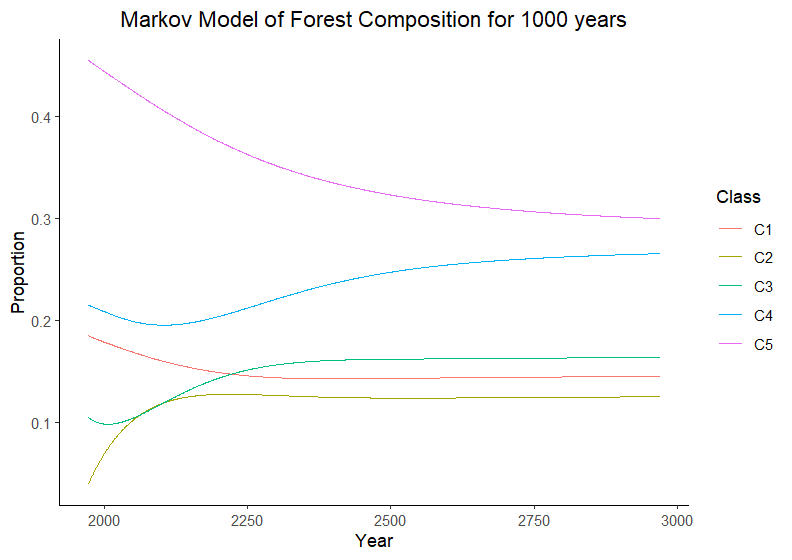

GIS and Spatial Analysis
Welcome to the GIS and Spatial Analysis Projects page!
Here, you’ll find a collection of my work, showcasing my journey from the humble beginnings of exploring geospatial data to tackling advanced projects in my graduate studies using programming languages R and Python. Each project highlights my growth in using spatial analysis tools to address real-world environmental challenges.
Using Python for Geo-spatial Analysis
For this project, I applied three geo-processing techniques, intersect, buffer, and area calculation, to my capstone research on mangrove ecosystems. Using Python, I intersected my study area with the Global Mangrove Watch dataset, applied a 25-meter buffer to the mangroves, and calculated their total area. I also automated data acquisition by scripting a download process for the datasets.
Methods with Code Snippets:
The first steps was to download the Global Mangrove Watch dataset. The code snippet below shows the automated downloading and extraction of Global Mangrove Watch data.
import requests
import zipfile
url = "https://zenodo.org/records/6894273/files/gmw_v3_2020_vec.zip?download=1"
#Fetching and downloading the data
data = requests.get(url)
#saving data to a file
with open('boa_mangrove_data.zip', 'wb') as file:
file.write(data.content)
print("Download Completed Successfully")
#Extracting data from ZIP file and saving in data folder
zip_file_path = 'boa_mangrove_data.zip'
extract_file = 'data_' # Data folder where I want to save the extracted contents
# Opening the ZIP file
with zipfile.ZipFile(zip_file_path, 'r') as zip_ref:
zip_ref.extractall(extract_file)
print(f'Contents extracted to: {extract_file}') # Term Concept 2.1 - Using Intersect to extract mangroves in AOI
from Global Mangrove Watch (GMW) Data
arcpy.analysis.Intersect(['gmw_v3_2020_vec.shp',
'TAHIRY_HONKO_MANAGEMENT_AREA.shp'],
"boa_mangroves.shp", "ALL")
print('Mangroves clipped successfully.')
# Term Concept 2.2 - Creating the 25 meter buffer for mangroves
boa_buffer = arcpy.analysis.Buffer(in_features='boa_mangroves.shp',
out_feature_class='boa_buffer.shp',
buffer_distance_or_field='25 meters', dissolve_option="ALL")
print('Buffer created successfully.')
#Term Concept 3 - Calculating Total Area of Mangroves
mangrove_areas = list() #Creating an empty list to store output of Search
Cursor
with arcpy.da.SearchCursor("boa_mangroves.shp", ["Shape_Area"]) as cursor:
for row in cursor:
mangrove_areas.append(row[0]) #adding results from Shape_Area into
list
total_area = sum(mangrove_areas) * 100 #converting area from Square Km to ha
print("Total Mangrove Area (ha):",total_area,"ha")
del cursor
del row(Assuming nir and red are numpy arrays)
Reflection:
I really enjoyed the opportunity to apply my Python skills beyond the classroom and directly to my research. Writing my own code to process geo-spatial data, instead of pre-defined tools, was both challenging and rewarding. What made this project even more exciting was automating the workflow by scripting data set downloads. This experience reinforced how powerful Python can be in geo-spatial analysis and gave me confidence in integrating coding into my research more effectively.
Skills Gained:
Vector Geoprocessing (Intersection & Buffering)
Search Cursors for Data Extraction
R Programming for Remote Sensing Analysis
Satellite Data Download & Extraction
Data Organization & Workflow Development
Investigating Movement Corridors for Grizzly Bears in Alberta
For this assignment, I performed a Least Cost Path analysis in ArcGIS Pro to evaluate optimal routes between a source and target location, considering environmental factors like terrain, land cover, and roads. The goal was to determine the most efficient path for a grizzly bear when travelling through a landscape. I did this by calculating a cost raster, which incorporates the obstacles associated with moving through an area, such as uneven slopes, proximity to roads, and changing land cover.
Key Results:
The analysis provided the optimal route based on minimized movement costs and highlighted the impact of terrain and land cover on accessibility in a habitat.

Reflection:
This assignment deepened my interest in species conservation by giving me a glimpse into how conservationists study the impacts of human development on endangered species. Through spatial analysis, I saw firsthand how movement corridors are shaped by habitat fragmentation and how crucial it is to consider these dynamics when planning development. Mapping least-cost paths made me feel like a conservationist myself, applying real-world methods to assess connectivity and identify risks to wildlife. It reinforced my appreciation for this type of work and made me envision the possibility of contributing to similar studies in the future.
Skills Gained:
Least Cost Path Analysis (ArcGIS Pro)
Cost Raster Creation (Terrain, Land Cover, Roads)
Spatial Analysis for Species Conservation
Mapping and Cartography
Modeling Forest Landscape Changes with Markov Models
As part of my Landscape Ecology course, I explored Markov models, a tool widely used in landscape ecology to predict future land cover changes based on past transitions. One of our labs focused on modeling landscape changes in the Pacific Northwestern forests using a Markov model. By analyzing Landsat imagery data from 1972, 1984, and 1991, we classified forest cover into different age classes and calculated transition probabilities for these classes over time. The Markov model was then used to:
Project future forest composition under different management scenarios.
Evaluate the impact of reduced harvesting rates on forest cover types.
Assess the long-term sustainability of current forest management practices.
One key aspect of this project involved simulating landscape changes over 1000 years, as seen in my figure below, to examine how forest cover proportions would stabilize under different harvesting scenarios.

Key Findings
Longer timesteps improve accuracy – The 1972–1984 projection was more reliable than 1984–1991, likely due to the longer timeframe capturing more stable trends.
Harvest rates impact old-growth forests – Reducing harvest rates slowed forest loss and increased the proportion of mature forests over time.
Sustainability concerns – The 1972–1984 harvesting rates led to a significant decline in old-growth forests, with their proportion falling below 20%, indicating unsustainable practices.
Steady-state conditions – Over time, the model projected that mature forests would stabilize above 30%, but this depended on continued reductions in harvest rates.
Reflection:
This project reinforced the well-known quote: “All models are wrong, but some are useful.” The goal was not to produce perfectly accurate predictions but rather to explore how different management decisions influence long-term forest dynamics. By adjusting harvest rates and observing their effects, I could see how even small policy changes significantly alter the landscape over time. This experience served as an important reminder that models should not be taken at face value—they are simplifications of reality and should always be interpreted with caution. The real power of models lies in their ability to help explore scenarios, test assumptions, and guide better decision-making rather than provide absolute answers.
Skills Gained:
Markov modeling
Impact Evaluation
Interpreting model outputs